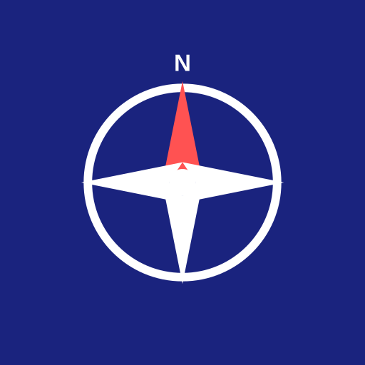
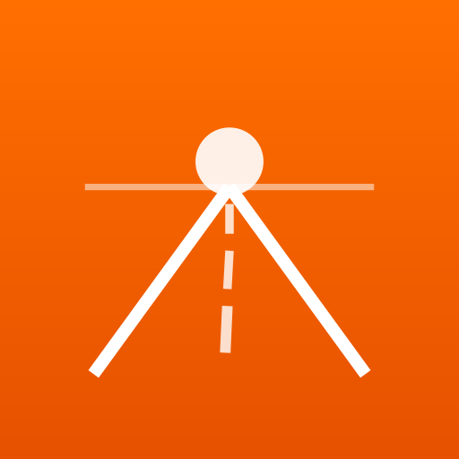

Road trip planning app — pick your favourite!
Classic map marker on teal. Clean, universally recognisable as a travel/maps app.
Navigation compass on dark navy. Classic explorer feel with a red north pointer.

Vanishing-point road with sunset. Evokes the open road and adventure.

Venice gondola with location pin on azure blue. Nods to the app name with a travel twist.
Stylised "V" as a road fork with a destination pin. Merges the app initial with the road trip concept.